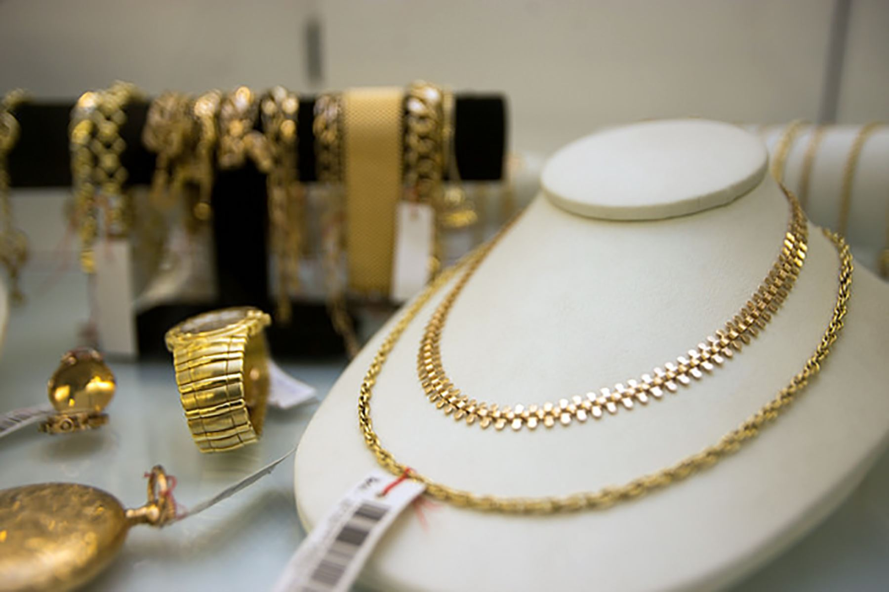
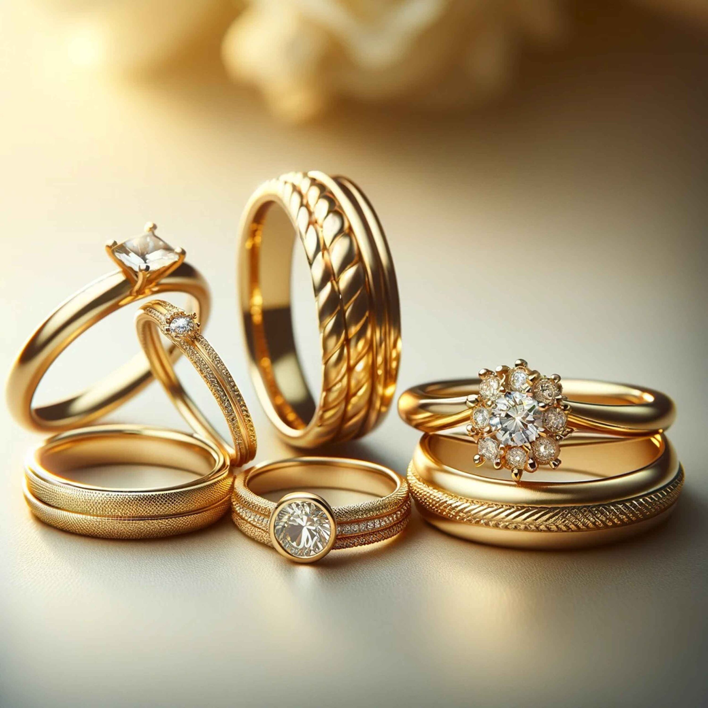

Gemas
Collares
Joyas Valiosas
Una gema, tambien llamada piedra preciosa, es una roca, mineral, vidrio o producto orgánico de origen natural, que al ser cortado o pulido se detalla. Las piedras peruanas más demandadas en el mundo son la crisocola (conocida también como "turquesa peruana" y los opalos andinos. Ballinas, un empresaria peruano de artesanias de piedras preciosas, que vive hace tres decadas en Orleans, Francia. En el Peru no existen piedras preciosas, solo semipreciosas.)
Piedras Preciosas
Piedras Semi Preciosas
Comercio